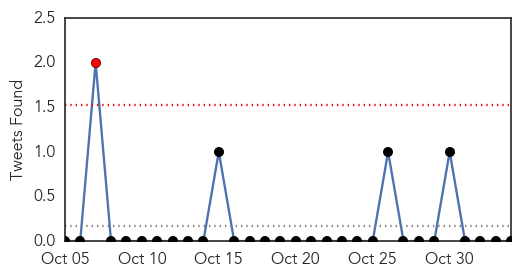
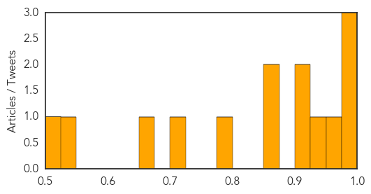

Toggle navigation
Early Warning
Daily Alerts
Influenza
Nov 03, 2014
Compare to:
-
Dengue Fever
Hemmorhagic Fever
Mold/Fungal Infection
Meningitis
Pertussis / Whooping Cough
Middle East Respiratory Syndrome
Cholera
Hepatitis
Chikungunya
Yellow Fever
Bubonic Plague
West Nile Virus
Swine Flu
Ebola
Measles
Unknown
Mumps
30 Day Trends
Web: 0
alerts
, 0
warnings
Twitter: 1
alerts
, 0
warnings
Top Articles:
0.999
Experts Encourage Flu Shots, Despite Recent Shortage
0.993
5 things to know about flu season
0.992
Fresenius Medical Care Urges At-Risk Populations to Get Annual Flu Shots, And Shares Four Simple Truths About the Vaccine
0.959
Jiangsu added to Taiwan's ...｜Society｜WCT
0.930
CDC raises avian flu travel alert for Jiangsu Province
0.912
Parents may struggle to find flu vaccine for toddlers in KC
0.909
Google Searches May Provide Accurate Data on Flu Infection Rates
0.873
SFH on influenza vaccination
0.868
As flu season approaches, health officials urge Montrealers to get vaccine
0.794
Marysue Grivna paralyzed with rare brain infection days after flu shot
0.719
Letter: The importance of flu vaccination
0.652
First Flu Case Hits Kansas
0.532
Indianapolis EMS Using Big Data to Track Potential Ebola Upsurge in Real Time
0.516
Help kids, receive free flu shots
Top Tweets:
No tweets found for Nov 03, 2014
Web/News Articles
Tweets

Article Locations
Article Confidences
